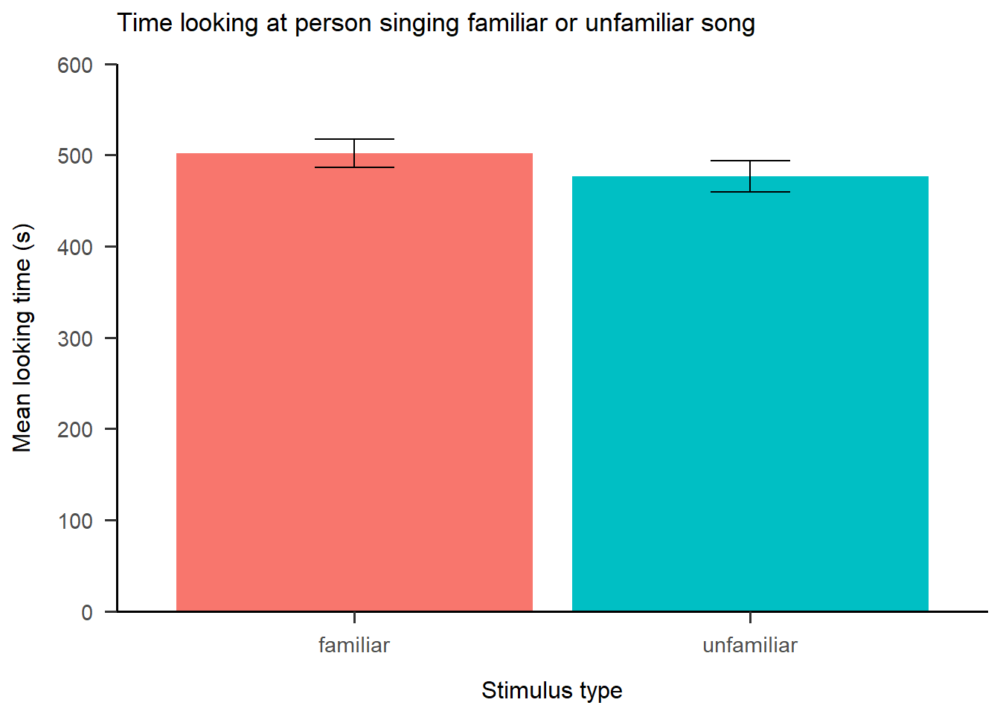
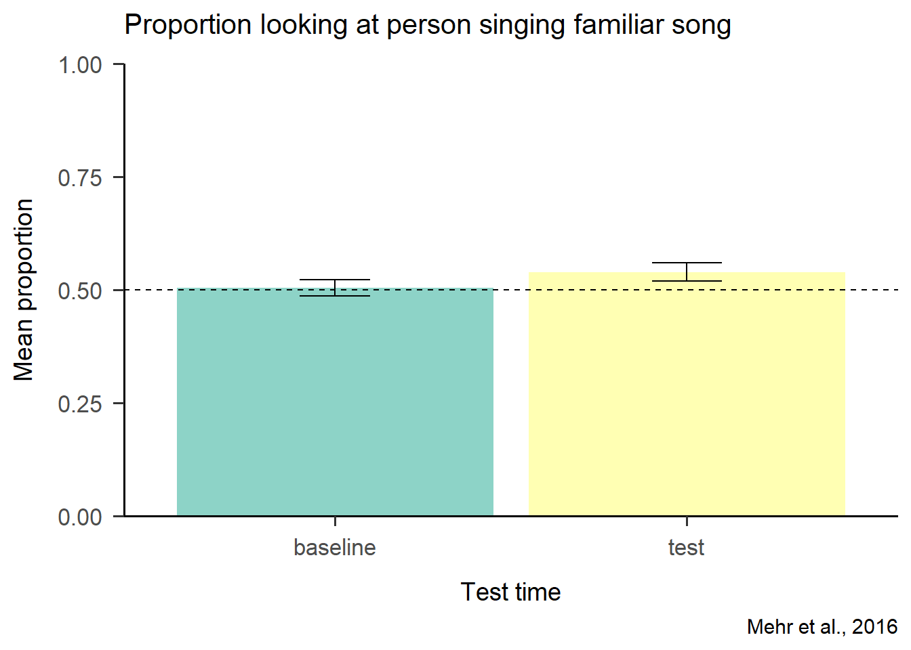
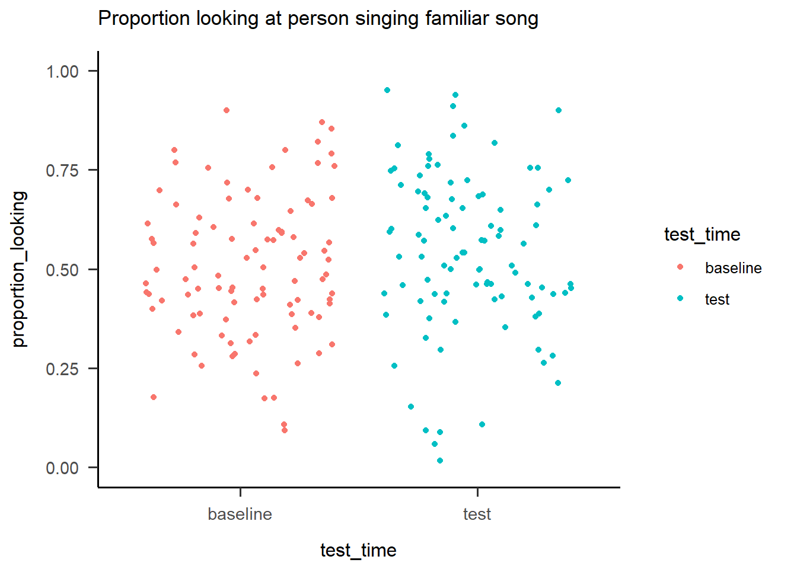
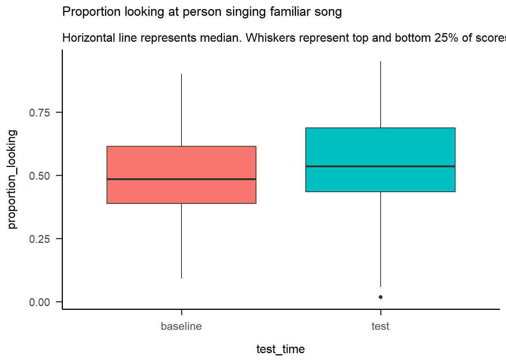

Last updated: 2020-09-19
Checks: 7 0
Knit directory: sakiko_project/
This reproducible R Markdown analysis was created with workflowr (version 1.6.2). The Checks tab describes the reproducibility checks that were applied when the results were created. The Past versions tab lists the development history.
Great! Since the R Markdown file has been committed to the Git repository, you know the exact version of the code that produced these results.
Great job! The global environment was empty. Objects defined in the global environment can affect the analysis in your R Markdown file in unknown ways. For reproduciblity it’s best to always run the code in an empty environment.
The command set.seed(20200910) was run prior to running the code in the R Markdown file. Setting a seed ensures that any results that rely on randomness, e.g. subsampling or permutations, are reproducible.
Great job! Recording the operating system, R version, and package versions is critical for reproducibility.
Nice! There were no cached chunks for this analysis, so you can be confident that you successfully produced the results during this run.
Great job! Using relative paths to the files within your workflowr project makes it easier to run your code on other machines.
Great! You are using Git for version control. Tracking code development and connecting the code version to the results is critical for reproducibility.
The results in this page were generated with repository version 85da34a. See the Past versions tab to see a history of the changes made to the R Markdown and HTML files.
Note that you need to be careful to ensure that all relevant files for the analysis have been committed to Git prior to generating the results (you can use wflow_publish or wflow_git_commit). workflowr only checks the R Markdown file, but you know if there are other scripts or data files that it depends on. Below is the status of the Git repository when the results were generated:
Ignored files:
Ignored: .Rhistory
Ignored: .Rproj.user/
Untracked files:
Untracked: data/1_Mehr2016_plot_test.csv
Unstaged changes:
Modified: analysis/blog_instructions.Rmd
Note that any generated files, e.g. HTML, png, CSS, etc., are not included in this status report because it is ok for generated content to have uncommitted changes.
These are the previous versions of the repository in which changes were made to the R Markdown (analysis/coding1.Rmd) and HTML (docs/coding1.html) files. If you’ve configured a remote Git repository (see ?wflow_git_remote), click on the hyperlinks in the table below to view the files as they were in that past version.
| File | Version | Author | Date | Message |
|---|---|---|---|---|
| Rmd | 85da34a | Sakiko Okayama | 2020-09-19 | Week 1 Complete |
| html | dc53341 | Sakiko Okayama | 2020-09-16 | Build site. |
| Rmd | 1a1fb7f | Sakiko Okayama | 2020-09-16 | coding1 progress |
| Rmd | 7d3eb37 | Your Name | 2020-09-11 | adding coding 1 |
| html | 7d3eb37 | Your Name | 2020-09-11 | adding coding 1 |
| html | 0093034 | Your Name | 2020-09-10 | Build site. |
| html | 20db285 | Your Name | 2020-09-10 | Build site. |
| Rmd | 0f9a29c | Your Name | 2020-09-10 | blog instructions |
In this coding exercise, you will work with data from a study published in Psychological Science.
Mehr, S. A., Song. L. A., & Spelke, E. S. (2016). For 5-month-old infants, melodies are social. Psychological Science, 27, 486-501.
library(tidyverse)
library(here)
library(janitor)
library(ggeasy)
library(ggbeeswarm)
library(RColorBrewer)
library(papaja)mehr <- read_csv(here("data", "1_Mehr2016.csv"))Use glimpse() or names() or str() to get an idea what is included in the dataset
glimpse(mehr)Rows: 96
Columns: 153
$ id <dbl> 101, 102, 103, 104, 105, 106, 10...
$ study_code <chr> "\"LUL\"", "\"LUL\"", "\"LUL\"",...
$ exp1 <dbl> 1, 1, 1, 1, 1, 1, 1, 1, 1, 1, 1,...
$ exp2 <dbl> 0, 0, 0, 0, 0, 0, 0, 0, 0, 0, 0,...
$ exp3 <dbl> 0, 0, 0, 0, 0, 0, 0, 0, 0, 0, 0,...
$ exp4 <dbl> NA, NA, NA, NA, NA, NA, NA, NA, ...
$ exp5 <dbl> NA, NA, NA, NA, NA, NA, NA, NA, ...
$ dob <chr> "09oct2012", "16nov2012", "26nov...
$ dot1 <chr> "29mar2013", "10may2013", "11may...
$ dot2 <chr> "05apr2013", "17may2013", "20may...
$ dot3 <chr> NA, NA, NA, NA, NA, NA, NA, NA, ...
$ female <dbl> 0, 0, 0, 1, 1, 0, 1, 0, 0, 1, 1,...
$ dad <dbl> 0, 1, 0, 0, 0, 0, 0, 0, 0, 0, 0,...
$ train <dbl> 2, 1, 1, 2, 2, 2, 1, 1, 2, 1, 2,...
$ Baseline_Proportion_Gaze_to_Singer <dbl> 0.4371257, 0.4125326, 0.7544910,...
$ Familiarization_Gaze_to_Familiar <dbl> 248, 406, 154, 502, 311, 639, 28...
$ Familiarization_Gaze_to_Unfamiliar <dbl> 419, 307, 218, 666, 245, 533, 46...
$ Test_Proportion_Gaze_to_Singer <dbl> 0.6027398, 0.6830266, 0.7241379,...
$ Difference_in_Proportion_Looking <dbl> 0.1656140, 0.2704940, -0.0303531...
$ Estimated_Total_Number_of_Song <dbl> 35.00000, 239.00000, 102.00000, ...
$ totskypesing <dbl> NA, NA, NA, NA, NA, NA, NA, NA, ...
$ stim <chr> "\"C1\"", "\"C1\"", "\"C2\"", "\...
$ othersing <dbl> 0, 1, 0, 1, 0, 0, 2, 2, 0, 0, 1,...
$ comply_no <dbl> NA, NA, NA, NA, NA, NA, NA, NA, ...
$ module <chr> "\"\"", "\"\"", "\"\"", "\"\"", ...
$ skype_before <dbl> NA, NA, NA, NA, NA, NA, NA, NA, ...
$ ammat <dbl> 17, 27, 31, 25, 29, 33, 28, 30, ...
$ ammar <dbl> 26, 28, 34, 24, 28, 33, 33, 28, ...
$ ammatot <dbl> 43, 55, 65, 49, 57, 66, 61, 58, ...
$ ammapr <dbl> 26, 62, 84, 44, 68, 86, 76, 70, ...
$ ipad_num <dbl> NA, NA, NA, NA, NA, NA, NA, NA, ...
$ famtot_6 <dbl> NA, NA, NA, NA, NA, NA, NA, NA, ...
$ unfamtot_6 <dbl> NA, NA, NA, NA, NA, NA, NA, NA, ...
$ totprac <dbl> 15.4941600, 5.4214220, 5.4510660...
$ totw <dbl> 793.392000, 153.788900, 0.000000...
$ totnw <dbl> 0.00000, 0.00000, 223.84700, 0.0...
$ age <dbl> 5.848049, 5.979466, 5.749486, 5....
$ length <dbl> 7, 7, 9, 7, 14, 13, 12, 14, 9, 7...
$ delay <dbl> NA, NA, NA, NA, NA, NA, NA, NA, ...
$ mtotsing <dbl> 5.000000, 34.142860, 11.333330, ...
$ mbabylike <dbl> 3.000000, 2.142857, 1.333333, 3....
$ msingcomf <dbl> 3.857143, 4.000000, 3.000000, 2....
$ mtotrecord <dbl> 0.5714286, 22.2857200, 0.0000000...
$ m_othersong <dbl> 3.2857140, 1.7142860, 0.0000000,...
$ pright <dbl> 0.80, 0.80, 0.96, 1.00, 1.00, 0....
$ diarymissing <dbl> 0, 0, 3, 0, 0, 0, 3, 5, 0, 0, 2,...
$ comply_fup <dbl> 1, 1, 1, 1, 1, 1, 1, 1, 1, 1, 1,...
$ survey_completion <dbl> 1.0000000, 1.0000000, 0.6666667,...
$ smsingrate <dbl> NA, NA, NA, NA, NA, NA, NA, NA, ...
$ smtalkrate <dbl> NA, NA, NA, NA, NA, NA, NA, NA, ...
$ gzsingrate <dbl> NA, NA, NA, NA, NA, NA, NA, NA, ...
$ gztalkrate <dbl> NA, NA, NA, NA, NA, NA, NA, NA, ...
$ famtot <dbl> NA, NA, NA, NA, NA, NA, NA, NA, ...
$ unfamtot <dbl> NA, NA, NA, NA, NA, NA, NA, NA, ...
$ totsing1 <dbl> 7, 6, 8, 3, 8, 9, 12, 5, 5, 15, ...
$ babylike1 <dbl> 3, 2, 2, 4, 2, 4, 3, 3, 2, 5, 3,...
$ singcomf1 <dbl> 3, 4, 3, 2, 3, 4, 3, 3, 2, 4, 4,...
$ totrecord1 <dbl> 0, 20, 0, 0, 2, 20, 2, 10, 4, 4,...
$ othersong1 <dbl> 6, 0, 0, 0, 0, 0, 8, 0, 16, 0, 0...
$ dtword1 <dbl> 293.022600, 55.807070, 24.555000...
$ dtnoword1 <dbl> 91.928550, 25.287440, 78.630000,...
$ totsing2 <dbl> 5, 25, 25, 6, 5, 12, 8, 7, 10, 1...
$ babylike2 <dbl> 3, 2, 1, 3, 3, 4, 3, 3, 3, 4, 4,...
$ singcomf2 <dbl> 4, 4, 4, 3, 4, 5, 4, 4, 2, 5, 4,...
$ totrecord2 <dbl> 0, 50, 0, 2, 0, 6, 4, 15, 0, 2, ...
$ othersong2 <dbl> 8, 12, 0, 0, 0, 0, 7, 0, 15, 17,...
$ dtword2 <dbl> 53.27683, 24.16411, 24.55500, 38...
$ dtnoword2 <dbl> 25.58346, 0.00000, 145.21700, 0....
$ totsing3 <dbl> 5, 50, 8, 6, 6, 10, 16, 4, 5, 10...
$ babylike3 <dbl> 3, 3, 2, 4, 3, 3, 4, 4, 3, 4, 4,...
$ singcomf3 <dbl> 4, 4, 3, 3, 4, 4, 4, 4, 3, 5, 4,...
$ totrecord3 <dbl> 0, 30, 0, 0, 0, 0, 5, 20, 3, 3, ...
$ othersong3 <dbl> 0, 0, 0, 0, 0, 0, 0, 0, 14, 0, 0...
$ dtword3 <dbl> 79.91525, 0.00000, 0.00000, 185....
$ dtnoword3 <dbl> 0.00000, 0.00000, 0.00000, 100.5...
$ totsing4 <dbl> 5, 30, 15, 0, 6, 9, 10, 4, 4, 5,...
$ babylike4 <dbl> 3, 2, 1, 3, 3, 4, 2, 4, 3, 4, 4,...
$ singcomf4 <dbl> 4, 4, 2, 2, 4, 5, 3, 3, 3, 5, 5,...
$ totrecord4 <dbl> 0, 16, 0, 0, 12, 8, 0, 2, 2, 0, ...
$ othersong4 <dbl> 9, 0, 0, 0, 0, 0, 21, 0, 12, 0, ...
$ dtword4 <dbl> 159.60610, 0.00000, 23.96200, 32...
$ dtnoword4 <dbl> 18.745650, 0.000000, 0.000000, 0...
$ totsing5 <dbl> 4, 40, 6, 4, 5, 8, 12, 3, 4, 5, ...
$ babylike5 <dbl> 3, 2, 1, 3, 4, 4, 2, 4, 4, 4, 4,...
$ singcomf5 <dbl> 4, 4, 3, 3, 5, 5, 4, 3, 4, 5, 5,...
$ totrecord5 <dbl> 2, 30, 0, 0, 10, 0, 0, 3, 0, 3, ...
$ othersong5 <dbl> 0, 0, 0, 0, 0, 0, 13, 0, 0, 0, 0...
$ dtword5 <dbl> 78.93342, 0.00000, 0.00000, 26.4...
$ dtnoword5 <dbl> 0.00000, 0.00000, 0.00000, 0.000...
$ totsing6 <dbl> 5, 50, 6, 4, 6, 7, 10, 4, 4, 5, ...
$ babylike6 <dbl> 3, 2, 1, 3, 4, 4, 3, 4, 4, 4, 5,...
$ singcomf6 <dbl> 4, 4, 3, 2, 5, 4, 5, 4, 4, 5, 5,...
$ totrecord6 <dbl> 2, 5, 0, 1, 0, 0, 5, 3, 0, 3, 2,...
$ othersong6 <dbl> 0, 0, 0, 0, 0, 0, 9, 0, 12, 0, 0...
$ dtword6 <dbl> 76.71582, 24.73150, 0.00000, 79....
$ dtnoword6 <dbl> 0.00000, 0.00000, 0.00000, 0.000...
$ totsing7 <dbl> 4, 38, NA, 4, 4, 10, 6, 4, 3, 5,...
$ babylike7 <dbl> 3, 2, NA, 4, 4, 4, 3, 5, 3, 4, 5...
$ singcomf7 <dbl> 4, 4, NA, 2, 4, 4, 4, 4, 4, 5, 5...
$ totrecord7 <dbl> 0, 5, NA, 0, 3, 1, 2, 6, 0, 5, 0...
$ othersong7 <dbl> 0, 0, NA, 0, 0, 0, 10, 0, 0, 0, ...
$ dtword7 <dbl> 0.00000, 49.08626, 30.14500, 106...
$ dtnoword7 <dbl> 0.00000, 146.20900, 0.00000, 0.0...
$ totsing8 <dbl> NA, NA, NA, NA, 3, 7, 15, 5, 4, ...
$ babylike8 <dbl> NA, NA, NA, NA, 3, 4, 3, 4, 3, N...
$ singcomf8 <dbl> NA, NA, NA, NA, 4, 5, 5, 4, 4, N...
$ totrecord8 <dbl> NA, NA, NA, NA, 4, 0, 5, 3, 5, N...
$ othersong8 <dbl> NA, NA, NA, NA, 0, 0, 10, 0, 0, ...
$ dtword8 <dbl> 51.92201, 0.00000, 0.00000, 45.7...
$ dtnoword8 <dbl> 0.00000, 0.00000, 0.00000, 0.000...
$ totsing9 <dbl> NA, NA, NA, NA, 4, 16, 12, 5, 5,...
$ babylike9 <dbl> NA, NA, NA, NA, 3, 4, 3, 4, 3, N...
$ singcomf9 <dbl> NA, NA, NA, NA, 4, 5, 5, 4, 3, N...
$ totrecord9 <dbl> NA, NA, NA, NA, 0, 12, 4, 10, 6,...
$ othersong9 <dbl> NA, NA, NA, NA, 0, 0, 7, 0, 0, N...
$ dtword9 <dbl> 0.0000, 0.0000, 0.0000, 0.0000, ...
$ dtnoword9 <dbl> 0, 0, 0, 0, 0, 0, 0, 0, 0, 0, 0,...
$ totsing10 <dbl> NA, NA, NA, NA, 3, 8, NA, NA, NA...
$ babylike10 <dbl> NA, NA, NA, NA, 3, 4, NA, NA, NA...
$ singcomf10 <dbl> NA, NA, NA, NA, 4, 4, NA, NA, NA...
$ totrecord10 <dbl> NA, NA, NA, NA, 6, 0, NA, NA, NA...
$ othersong10 <dbl> NA, NA, NA, NA, 0, 0, NA, NA, NA...
$ dtword10 <dbl> 0.0000, 0.0000, 0.0000, 0.0000, ...
$ dtnoword10 <dbl> 0, 0, 0, 0, 0, 0, 0, 0, 0, 0, 0,...
$ totsing11 <dbl> NA, NA, NA, NA, 4, 12, NA, NA, N...
$ babylike11 <dbl> NA, NA, NA, NA, 3, 4, NA, NA, NA...
$ singcomf11 <dbl> NA, NA, NA, NA, 4, 5, NA, NA, NA...
$ totrecord11 <dbl> NA, NA, NA, NA, 6, 0, NA, NA, NA...
$ othersong11 <dbl> NA, NA, NA, NA, 0, 28, NA, NA, N...
$ dtword11 <dbl> 0.00000, 0.00000, 0.00000, 0.000...
$ dtnoword11 <dbl> 0, 0, 0, 0, 0, 0, 0, 0, 0, 0, 0,...
$ totsing12 <dbl> NA, NA, NA, NA, 2, 8, NA, NA, NA...
$ babylike12 <dbl> NA, NA, NA, NA, 3, 4, NA, NA, NA...
$ singcomf12 <dbl> NA, NA, NA, NA, 4, 5, NA, NA, NA...
$ totrecord12 <dbl> NA, NA, NA, NA, 4, 2, NA, NA, NA...
$ othersong12 <dbl> NA, NA, NA, NA, 0, 0, NA, NA, NA...
$ dtword12 <dbl> 0, 0, 0, 0, 0, 0, 0, 0, 0, 0, 0,...
$ dtnoword12 <dbl> 0, 0, 0, 0, 0, 0, 0, 0, 0, 0, 0,...
$ totsing13 <dbl> NA, NA, NA, NA, 0, 10, NA, NA, N...
$ babylike13 <dbl> NA, NA, NA, NA, 3, 4, NA, NA, NA...
$ singcomf13 <dbl> NA, NA, NA, NA, 4, 5, NA, NA, NA...
$ totrecord13 <dbl> NA, NA, NA, NA, 15, 0, NA, NA, N...
$ othersong13 <dbl> NA, NA, NA, NA, 0, 0, NA, NA, NA...
$ dtword13 <dbl> 0.00000, 0.00000, 0.00000, 0.000...
$ dtnoword13 <dbl> 0.0000, 0.0000, 0.0000, 0.0000, ...
$ totsing14 <dbl> NA, NA, NA, NA, 4, NA, NA, NA, N...
$ babylike14 <dbl> NA, NA, NA, NA, 3, NA, NA, NA, N...
$ singcomf14 <dbl> NA, NA, NA, NA, 4, NA, NA, NA, N...
$ totrecord14 <dbl> NA, NA, NA, NA, 0, NA, NA, NA, N...
$ othersong14 <dbl> NA, NA, NA, NA, 0, NA, NA, NA, N...
$ dtword14 <dbl> 0, 0, 0, 0, 0, 0, 0, 0, 0, 0, 0,...
$ dtnoword14 <dbl> 0, 0, 0, 0, 0, 0, 0, 0, 0, 0, 0,...
$ `filter_$` <dbl> 1, 1, 1, 1, 1, 1, 1, 1, 1, 1, 1,...There are lots of variables in this data set that we wont need. Make a smaller data set that only includes id and the key dependent variables (baseline, familiarisation and test looking).
selectdata <- select(mehr, id, Baseline_Proportion_Gaze_to_Singer, Familiarization_Gaze_to_Familiar, Familiarization_Gaze_to_Unfamiliar, Test_Proportion_Gaze_to_Singer)The key DV variables have unwieldy names. Rename them so they are easier to refer to in your code.
renamedata <- rename(mehr, baseline = Baseline_Proportion_Gaze_to_Singer, familiar = Familiarization_Gaze_to_Familiar, unfamiliar = Familiarization_Gaze_to_Unfamiliar, test = Test_Proportion_Gaze_to_Singer)In this kind of experiment, it is important to confirm that infants looking at each kind of stimulus during the familiarisation phase is the same. Calculate the mean and sd for familiarisation looking at the familiar and unfamiliar stimulus.
summarise(renamedata, meanfamiliar = mean(familiar), sdfamiliar = sd(familiar), meanunfamiliar = mean(unfamiliar), sdunfamiliar = sd(unfamiliar))# A tibble: 1 x 4
meanfamiliar sdfamiliar meanunfamiliar sdunfamiliar
<dbl> <dbl> <dbl> <dbl>
1 502. 153. 477. 169.Infants looked on average 501.71 ms at the familiar and 476.76 ms - it is hard to tell whether a difference of 25 ms will be significantly different without plotting the data with standard error bars.
Make a new df that includes only id and the familiarisation data and use pivot_longer() to make the data into long format. You will end up with one column that has values of stimulus in it (familiar, unfamiliar) and one that has looking time values.
longdata <- renamedata %>%
select(id, familiar, unfamiliar) %>%
pivot_longer(names_to = "stimulus", values_to = "looking_time", "familiar":"unfamiliar")Great, now your dataframe has 192 observations intead of 96 observations.
Use group_by and summarise to get a dataframe of summary stats, including mean, sd, n, stderror for each stimulus.
summarydata <- longdata %>%
group_by(stimulus)%>%
summarise(mean = mean(looking_time), sd = sd(looking_time), n = n(), stderror = sd/sqrt(n))Use the summary df to make a column graph plotting mean looking as a function of stimulus. Make it fancy by …
write_csv(summarydata, here("data", "1_Mehr2016_plot.csv"))
plotdata <- read_csv(here("data", "1_Mehr2016_plot.csv"))
plotdata %>%
ggplot(aes(x = stimulus, y = mean, fill = stimulus)) +
geom_col() +
geom_errorbar(aes(x = stimulus, ymin = mean-stderror, ymax = mean+stderror),
size=.3,
width=.2) +
theme_apa(base_size = 14) +
scale_y_continuous(limits = c(0,600), expand = c(0,0)) +
labs(x="Stimulus type", y="Mean looking time (s)")
Great! looks like the error bars overlap, so there is unlikely to be a significant difference in the amount of time that infants looked at familiar vs. unfamiliar during the familiarisation.
The other DV in this experiment is the propootion of time that infants spend looking at the person who was associated with the familiar song. The authors expected infants not to show any preferneces at baseline and that looking time at the person who sung the familiar song would be about 0.50. At test, however, if infants associate people with familiar music, the authors expected infants to show a preference for the person who sung the song that was familiar to them i.e. to look > 0.50.
Replicate the process above for the test data… 1. start with the renamed df and select just id and the variables associated with the test 2. make the data long so you have one column with test time in it (baseline, test) and one with proportion scores 3. use group_by and summarise to make a df of summary stats (mean, sd, n, stderror) 4. plot the proportion scores as a function of test time, including error bars. Try some fancy things with this plot… + maybe add a dashed horizontal line at 0.5 + try a different colour palette with RColorBrewer, type display.brewer.all() in the console to see all the options + add a title to the plot, maybe a caption at the bottom + see if you can remove the legend, its not really necessary
# make the data long
longtest <- renamedata %>%
select(id, baseline, test) %>%
pivot_longer(names_to = "test_time", values_to = "proportion_looking", "baseline":"test")
#make summary stats
summarytest <- longtest %>%
group_by(test_time)%>%
summarise(mean = mean(proportion_looking), sd = sd(proportion_looking), n = n(), stderror = sd/sqrt(n))`summarise()` ungrouping output (override with `.groups` argument)# plot
write_csv(summarytest, here("data", "1_Mehr2016_plot_test.csv"))
plottest <- read_csv(here("data", "1_Mehr2016_plot_test.csv"))Parsed with column specification:
cols(
test_time = col_character(),
mean = col_double(),
sd = col_double(),
n = col_double(),
stderror = col_double()
)plottest %>%
ggplot(aes(x = test_time, y = mean, fill = test_time)) +
geom_col() +
scale_y_continuous(limits = c(0,0.6), expand = c(0,0)) +
geom_errorbar(aes(x = test_time, ymin = mean-stderror, ymax = mean+stderror),
width=.2) +
theme_apa(base_size = 14) +
labs(x = "Test time", y="Mean proportion", title = "Proportion looking at person singing familiar song", caption = "Mehr et al., 2016") +
geom_hline(yintercept=0.5, linetype="dashed") +
scale_fill_brewer(palette="Set3") +
easy_remove_legend()
Try geom_jitter and geom_boxplot to visualise the raw proportion scores at baseline and test. Try layering the jitter on top of the boxplot. You might want to make the point transparent using alpha = 0.5
longtest %>%
ggplot(aes(x = test_time, y = proportion_looking, colour = test_time)) +
geom_jitter() +
theme_apa()
longtest %>%
ggplot(aes(x = test_time, y = proportion_looking, fill = test_time)) +
geom_boxplot() +
theme_apa()
longtest %>%
ggplot(aes(x = test_time, y = proportion_looking, colour = test_time)) +
geom_boxplot() +
geom_jitter(alpha = 0.5) +
theme_apa()
sessionInfo()R version 4.0.2 (2020-06-22)
Platform: x86_64-w64-mingw32/x64 (64-bit)
Running under: Windows 10 x64 (build 19041)
Matrix products: default
locale:
[1] LC_COLLATE=English_Australia.1252 LC_CTYPE=English_Australia.1252
[3] LC_MONETARY=English_Australia.1252 LC_NUMERIC=C
[5] LC_TIME=English_Australia.1252
attached base packages:
[1] stats graphics grDevices utils datasets methods base
other attached packages:
[1] papaja_0.1.0.9997 RColorBrewer_1.1-2 ggbeeswarm_0.6.0 ggeasy_0.1.2
[5] janitor_2.0.1 here_0.1 forcats_0.5.0 stringr_1.4.0
[9] dplyr_1.0.2 purrr_0.3.4 readr_1.3.1 tidyr_1.1.1
[13] tibble_3.0.3 ggplot2_3.3.2 tidyverse_1.3.0 workflowr_1.6.2
loaded via a namespace (and not attached):
[1] Rcpp_1.0.5 lubridate_1.7.9 utf8_1.1.4 assertthat_0.2.1
[5] rprojroot_1.3-2 digest_0.6.25 R6_2.4.1 cellranger_1.1.0
[9] backports_1.1.7 reprex_0.3.0 evaluate_0.14 httr_1.4.2
[13] pillar_1.4.6 rlang_0.4.7 readxl_1.3.1 rstudioapi_0.11
[17] whisker_0.4 blob_1.2.1 rmarkdown_2.3 labeling_0.3
[21] munsell_0.5.0 broom_0.7.0.9001 vipor_0.4.5 compiler_4.0.2
[25] httpuv_1.5.4 modelr_0.1.8 xfun_0.16 pkgconfig_2.0.3
[29] htmltools_0.5.0 tidyselect_1.1.0 fansi_0.4.1 crayon_1.3.4
[33] dbplyr_1.4.4 withr_2.2.0 later_1.1.0.1 grid_4.0.2
[37] jsonlite_1.7.0 gtable_0.3.0 lifecycle_0.2.0 DBI_1.1.0
[41] git2r_0.27.1 magrittr_1.5 scales_1.1.1 cli_2.0.2
[45] stringi_1.4.6 farver_2.0.3 fs_1.5.0 promises_1.1.1
[49] snakecase_0.11.0 xml2_1.3.2 ellipsis_0.3.1 generics_0.0.2
[53] vctrs_0.3.2 tools_4.0.2 glue_1.4.1 beeswarm_0.2.3
[57] hms_0.5.3 yaml_2.2.1 colorspace_1.4-1 rvest_0.3.6
[61] knitr_1.29 haven_2.3.1